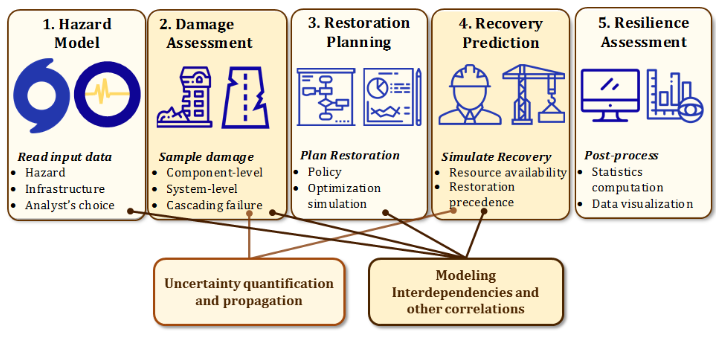
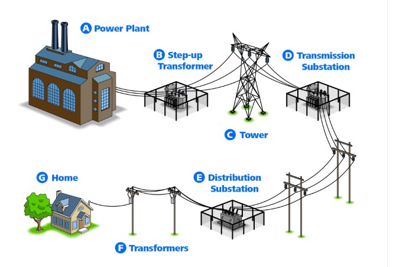
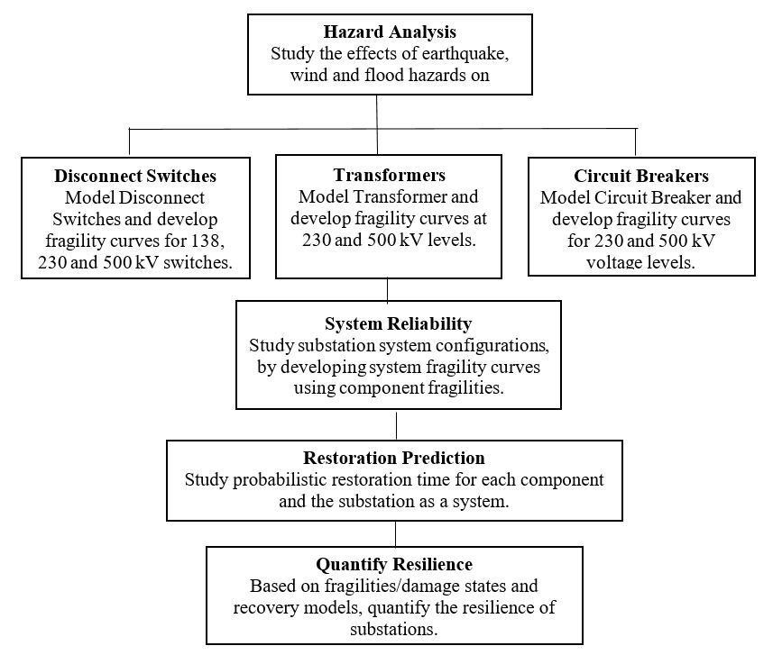

My research is part of a large collaborative project named Probabilistic Resilience Assessment of Interdependent System (PRAISys). This project involves students and professors from Civil Engineering,Computer Science, System Engineering, Economics, and Urban Planning and Policy Making. The goal of PRAISys project is to establish a framework to determine the resilience of interdependent infrastructure systems for extreme events under uncertainty. PRAISys will help in management and design of new generation of resilient infrastructure systems to extreme events. The PRAISys platform includes five main computational steps shown in Figure 1 1 and it focuses on transportation, power and communication systems. The aim of this research is to contribute to substation resilience assessment of power systems to the extreme events as part of the PRAISys project.


Figure 1 PRAISys platform framework and the layout of the power network
Electrical substations are an important part of the electric power system that manages/maintains voltage and facilitates the transfer of power for distribution in local grids (IEEE-605, 2008). They are part of the electrical generation, transmission and distribution system that change the voltage level from high to low or vice versa upon demand (Figure 1 2). Previous earthquakes in Loma Prieta (1989), Northridge (1995) and Kobe (1996) have demonstrated that damage to power infrastructures can cause severe societal and economic losses (Chung, 1996; Kasai & Maison, 1997; Lund, 1996). The damage of substation equipment from Loma Prieta and Northridge earthquakes caused approximately $283 million worth of losses (Schiff, 1999). Loss of electrical power service may also delay emergency and post-earthquake recovery services. It is important for utility companies to make power systems more resilient to ensure their functionality during future hazards events.

Figure 2 Research objective for resilience assessment of electrical substations